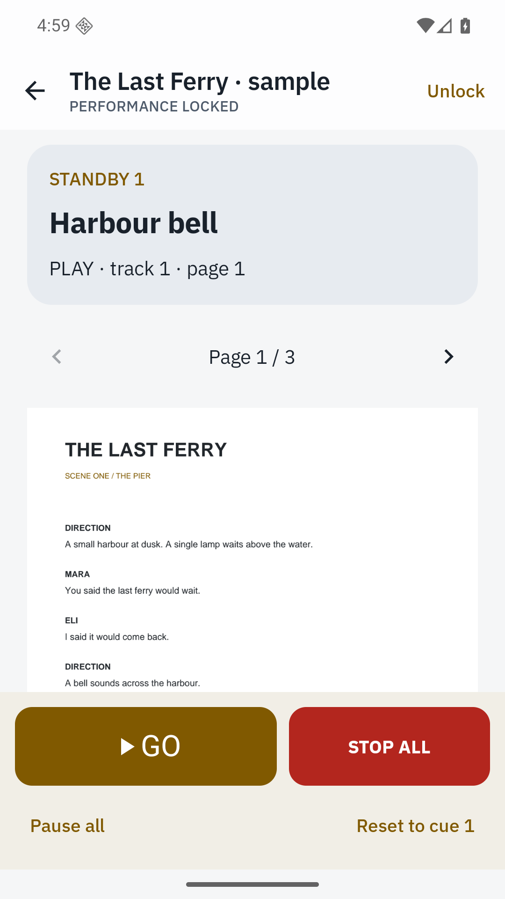
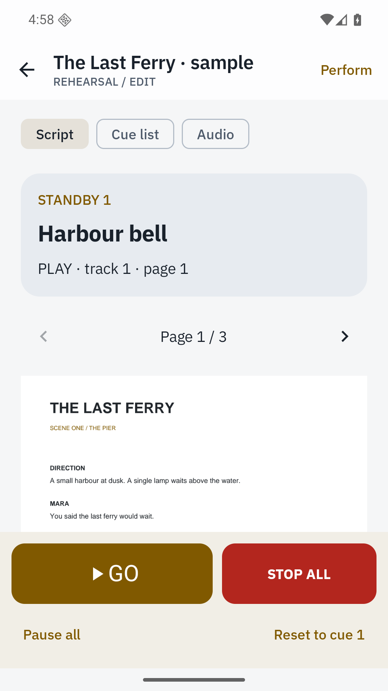
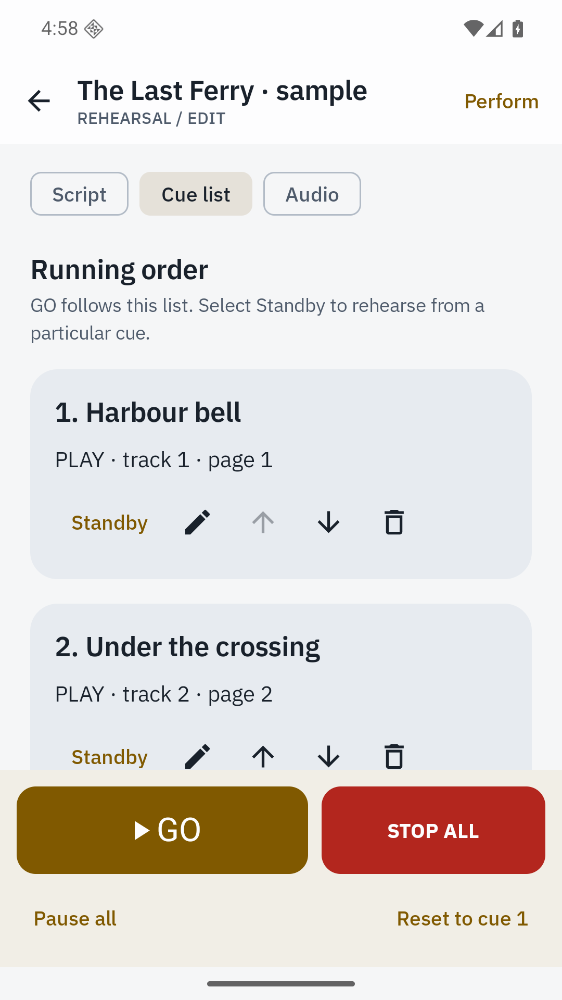

Anchor sound to the script
Import a PDF, add local audio and attach cues to exact page positions. Reorder the running list as the show develops.
Your script and sound, together at the moment that matters.
View on Google PlayPreparing for releaseUS $6.99 · UK £5.99 · India ₹249
One upfront purchase. Every feature included.

Link audio cues to PDF scripts and run a focused four-track performance desk. All core features are included in the purchase, with no extra unlocks.
Import a PDF, add local audio and attach cues to exact page positions. Reorder the running list as the show develops.
Lock editing, keep the screen awake and use prominent GO and STOP ALL controls. Standard keyboard and Bluetooth HID shortcuts are supported.
Play, pause, stop, fade, loop and advance. Rehearse from any cue and resume paused tracks explicitly.
Export the script, audio and cue configuration in one portable archive. Import it alongside existing shows.


Audio pauses when focus is lost, an output disconnects or the app leaves the foreground. It never resumes automatically after an interruption or process restart. Keep the console in the foreground during a performance and test the chosen device, audio output and remote before a show.
A complete original sample show is included. Import uses device-supported local audio formats; no streaming services or microphone recording are included.
Android 8.0 or later. English interface. Archive limits: 4 GB expanded; individual media files up to 200 MB where applicable. Read the practical details.
Yes, up to four independent tracks. A PLAY cue replaces audio on its assigned track.
All tracks pause safely. Nothing resumes automatically; use a track’s Resume control when you are ready.
Remotes that send standard keyboard/HID keys can trigger the documented shortcuts. Test your remote during rehearsal.
No. Cuefolio uses local audio files copied into the show archive.